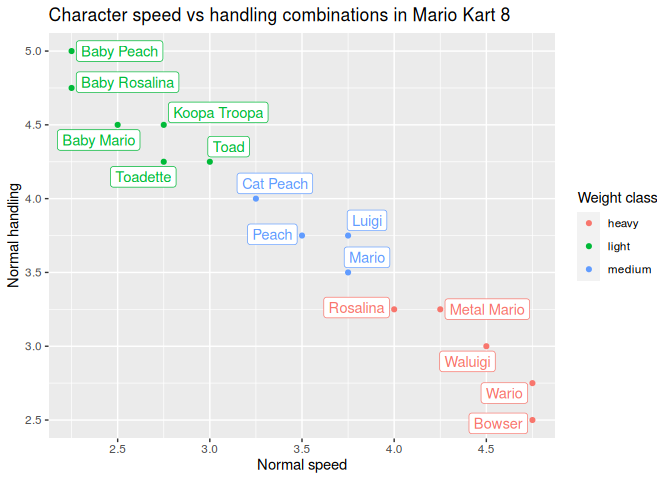

Overview
Mario Kart character and vehicle statistics datasets from different games of the series.
Currently these entries have been implemented:
- Mario Kart Wii (
mkwii_characters,mkwii_vehicles) - Mario Kart 8 (
mk8_characters,mk8_vehicles,mk8_wheels,mk8_gliders)
Installation
The development version from GitHub with:
# install.packages("devtools") devtools::install_github("aldomann/mariokart")
Examples
This is an example which shows how to visually compare statistics from different Mario Kart 8 characters:
data(mkwii_characters) data(mk8_vehicles) mk8_characters %>% group_by(speed_normal, handling_normal, weight_class) %>% slice(1) %>% ggplot() + aes(x = speed_normal, y = handling_normal, color = weight_class, label = character) + ggrepel::geom_label_repel(seed = 1, show.legend = FALSE) + geom_point() + scale_x_continuous(breaks = seq(2, 5, 0.5)) + labs( title = "Character speed vs handling combinations in Mario Kart 8", x = "Normal speed", y = "Normal handling", color = "Weight class" )

This is an example which shows how to visually compare Mario Kart Wii karts statistics grouped by drifting type:
data(mkwii_vehicles) mkwii_vehicles %>% filter(vehicle_type == "bike") %>% mutate(total_stats = rowSums(select_if(., is.numeric))) %>% select(starts_with("vehicle"), drift_type, weight_class, total_stats) %>% arrange(vehicle_class) %>% ggplot() + aes(x = reorder(vehicle, total_stats), y = total_stats, fill = vehicle_class) + geom_col() + labs( title = "Bikes in Mario Kart Wii by total statistics", x = "Kart name", y = "Total statistics", fill = "Vehicle class" ) + facet_grid(drift_type ~ ., scales = "free_y", space = "free_y") + coord_flip()
This is an example which shows a visual comparison of the best chacarters per weight class in Mario Kart Wii:
data(mkwii_characters) mkwii_characters %>% select(-weight) %>% mutate(total_stats = rowSums(select_if(., is.numeric))) %>% dplyr::arrange(desc(total_stats)) %>% group_by(weight_class) %>% mutate_at(vars(-character, -weight_class, -total_stats), function(x) {x/10}) %>% slice(1) %>% ungroup() %>% select(-weight_class, -total_stats) %>% ggradar::ggradar( grid.label.size = 5, group.point.size = 4, group.line.width = 1, axis.labels = c("Speed", "Acceleration", "Handling", "Drift", "Off-road", "Mini-turbo"), axis.label.size = 4.5, legend.text.size = 12 )
A graph showing the speed as a function of time when accelerating from a standstill with various characters in Super Mario Kart:
data(smk_acceleration) smk_acceleration %>% filter(character %in% c("Mario", "Peach", "Toad", "Bowser")) %>% ggplot() + aes(x = time, y = speed, group = character, color = character) + geom_line() + geom_point() + scale_x_continuous(breaks = seq(0, 8, 1)) + scale_y_continuous(breaks = seq(0, 140, 20)) + labs( title = "Speed as a function of time for various characters in Super Mario Kart", x = "Time (s)", y = "Speed (km/h)", color = "Character" )